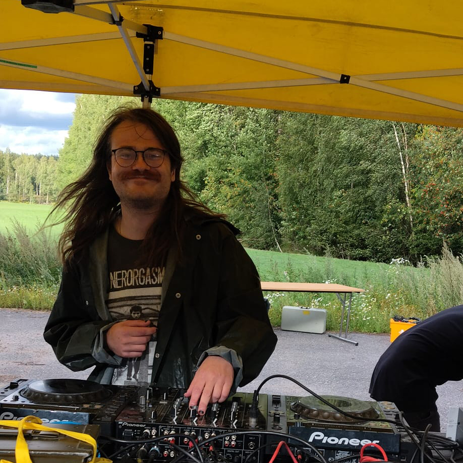
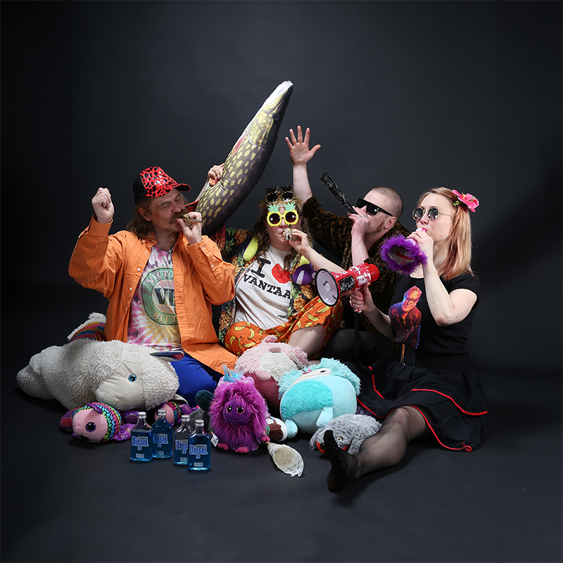
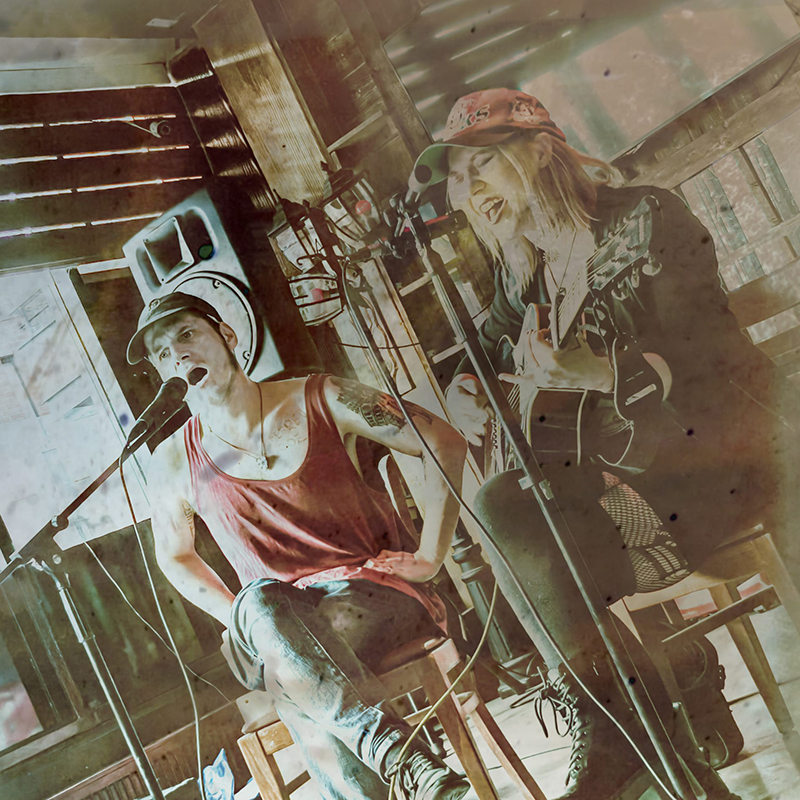
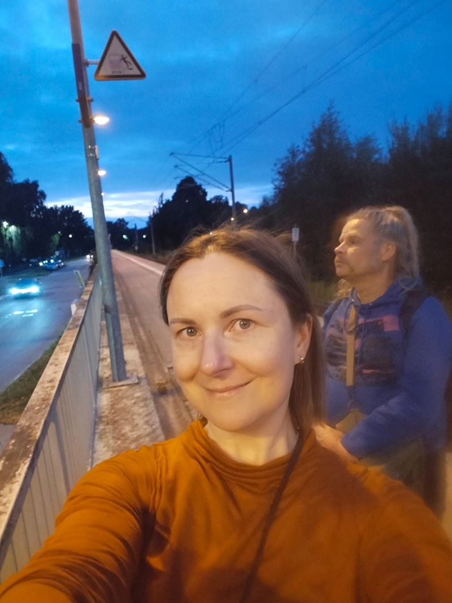
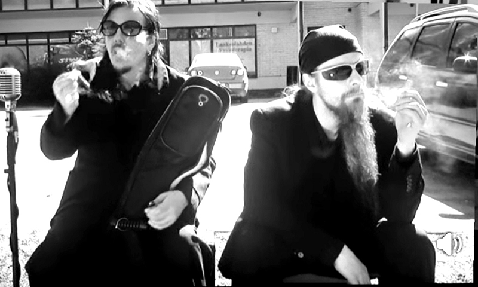
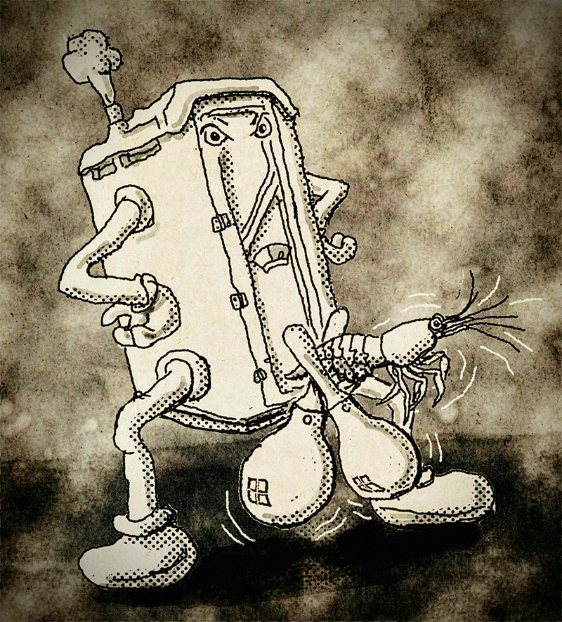
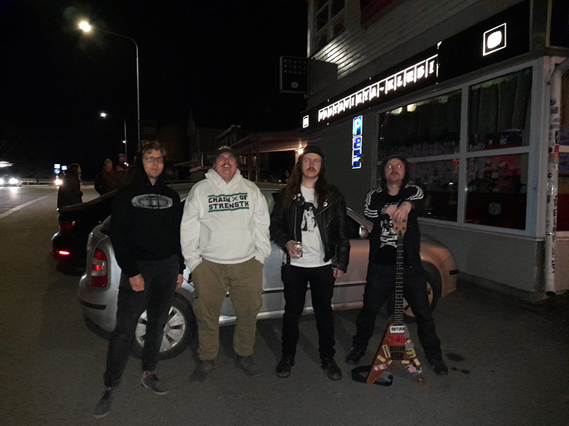
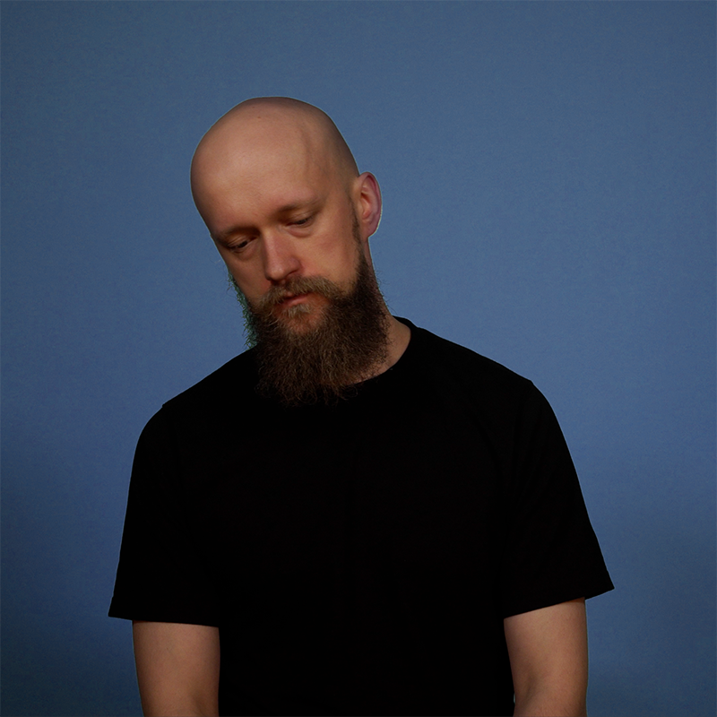
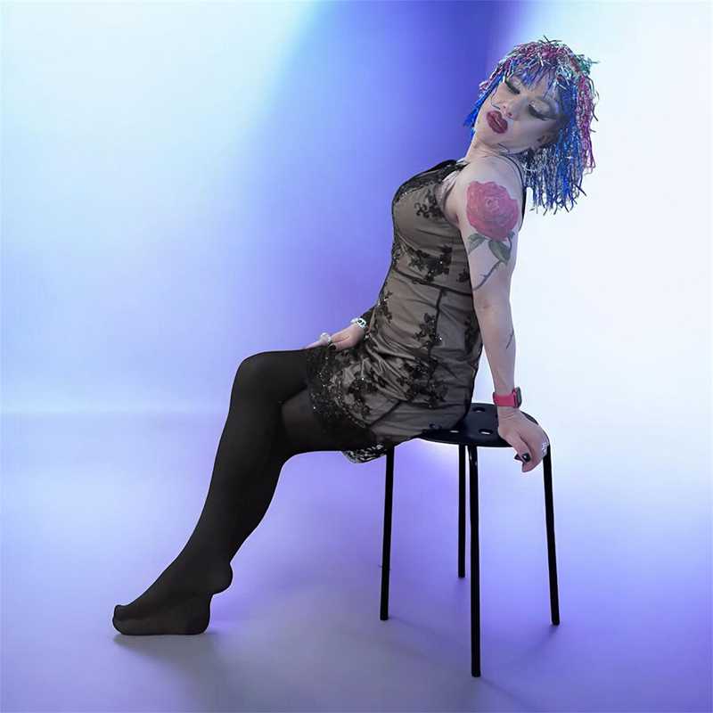

Paskafest on kolmatta kertaa järjestettävä mielenosoitus, joka vaatii Lisää ilmaista paskaa Helsinkiin...ja Vantaalle
Paskafest 2026 järjestetään Vaaralan Rivieralla hintsusti Vantaan puolella. Tarkempaa ohjeistusta ja infoa tuloillaan.
Aloitellaan neljältä, lopetellaan kun lopetellaan. Tarkentuu lähempänä p-hetkeä.
Seppo Frigo | Kaisu and the Vappupillis | Wieno Mielikki & Olavi Raunio | Muovi Makkonen | Tunnetusti Varattomat | Paskafest Open Mic | The Bajamaja Shrimp Shakers | Loppuromahdus | nikotopias | Tomppa Virgin | jænne | Varaktor | Örinä hevosenpaska | Madam Moonflower

”Dekin takana mun lemppari DJ
Ja se soittaa meille vain hyvii biisei"
©Jukka Poika

Diesel vetoinen free jazz avant garde kazoo bile orkesteri – älä odota mitään, valmistaudu kaikkeen

Päihdeongelmainen aviopari jotka soittavat suomenkielistä emokantria, laulujen aiheina väkivalta, päihteet ja rakkaus.

Muovi Makkosta on kutsuttu mm. Lastentarhanopettaja happopäissä. Suomirokkia sähkökitaran, koskettimien rumpukompin säestyksellä.

Tunnetusti Varattomat on useammalla vuosikymmennellä hämmentänyt suomalaista suoaluetta rämeisellä blues musiikilla.

Ketterän innovatiivista häröpallomeuhkausmikromunaräkärokkiräpellystä jo vuodesta 2026
Diesel vetoinen free jazz avant garde kazoo bile orkesteri – älä odota mitään, valmistaudu kaikkeen
Päihdeongelmainen aviopari jotka soittavat suomenkielistä emokantria, laulujen aiheina väkivalta, päihteet ja rakkaus.
Muovi Makkosta on kutsuttu mm. Lastentarhanopettaja happopäissä. Suomirokkia sähkökitaran, koskettimien rumpukompin säestyksellä.
Tunnetusti Varattomat on useammalla vuosikymmennellä hämmentänyt suomalaista suoaluetta rämeisellä blues musiikilla.
Ketterän innovatiivista häröpallomeuhkausmikromunaräkärokkiräpellystä jo vuodesta 2026

LOPPUROMAHDUS on '${city}' ponnistava '${memberCount}' jäseninen '${subGenre}' yhtye. Energisistä liveperformansseistaankin tunnetun '${bandDisplayName}' musiikissa voi kuulla vaikutteita bändeistä kuten ${topListened} ja \["Metallica", "Dead Moon", "vaikka ny discharge"\]. # escapet rikki muista korjata myöhemmin ja loppuun BRUTAL FUCK OFF TO HEVAREIDEN HASSUTTELUPUNK HORDES

nikotopias on spoken word-runouden ja räpin yhtymäkohdassa suvereenisti seilaava Helsinkiläinen musiikkituottaja, muusikko, ja hiphop-artisti. Leikkii sanoilla, avautuu, angstaa ja suoltaa loputtomia 2000-luvun taitteen kulttuuriviittauksia. Mukana menossa, samplerin takana, on biittiseppä toma. (@tomaoffinland)

Raketin lailla ei kenenkään tietoisuuteen noussut Tomppa Virgin yhdistelee drag-taiteessaan roskaestetiikkaa ripauksella glamouria. Call the Police-hitillään nobodyksi jäänyt Tomppa lipsynccaa mutta valitettavasti myös laulaa. Vapise Rupaul, täältä tulee Tomppa Virgin
Kunnioita toisen henkilökohtaista fyysistä ja psyykkistä tilaa. Kunnioita itsemääräämisoikeutta. Älä koske toista kysymättä lupaa. Muista, ettet voi tietää toisen rajoja kysymättä niitä. Pyydä tilaa myös itsellesi tarvittaessa.
Älä pilkkaa, ivaa, halvenna, sysää syrjään tai nolaa ketään puheillasi, käytökselläsi tai teoillasi. Pitäydy ulkonäön arvostelusta, juoruilusta ja stereotypioiden ylläpitämisestä.
Älä tee oletuksia ulkonäköön tai toimintaan perustuen. Älä tee oletuksia kenenkään seksuaalisuudesta, sukupuolesta, kansallisuudesta, etnisyydestä, uskonnosta, arvoista, sosioekonomisesta taustasta, terveydestä tai toimintakyvystä.
Anna tilaa. Pyri huolehtimaan siitä, että kaikilla on mahdollisuus osallistua keskusteluun. Älä jyrää muiden mielipiteitä ja anna puheenvuoro. Kunnioita myös toisten yksityisyyttä ja käsittele arkoja aiheita kunnioittavasti.
Kuuntele ja opi. Ota vastaan uudet aiheet, henkilöt ja näkökulmat ennakkoluulottomasti. Suhtaudu jokaiseen vastaantulevaan asiaan ja tilanteeseen mahdollisuutena oppia uutta ja kehittyä.
Pyydä anteeksi, jos olet loukannut tahallisesti tai tahattomasti muita.
Kohtele muita, kuten haluaisit itseäsi kohdeltavan.
Jos huomaat jonkun käyttäytyvän asiattomasti tai muutoin rikkovan Turvallisemman tilan toimintaperiaatteita, puutu tilanteeseen.
Mikäli koet tai huomaat toiminnassa tai tapahtumissa häiritsevää käytöstä, ota yhteyttä järjestäjiin.